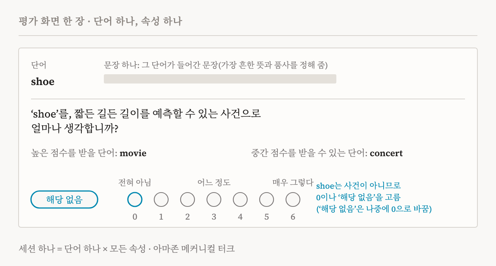

2016년 『인지 신경심리학(Cognitive Neuropsychology)』에 「뇌에 기반한 성분 의미 표상을 향하여(Toward a brain-based componential semantic representation)」라는 논문이 실렸습니다. 미국 위스콘신 의과대학의 Jeffrey R. Binder가 제1저자이고, 같은 대학의 Lisa L. Conant, Colin J. Humphries, Leonardo Fernandino와 Teledyne Scientific의 Stephen B. Simons, Mario Aguilar, 사우스캐롤라이나 대학교의 Rutvik H. Desai가 함께 썼습니다. 미국 정보고등연구계획국(IARPA)이 연구비를 댔습니다.
단어의 뜻을 몇 가지 기본 성분으로 나눌 수 있다면, 그 성분은 무엇이어야 할까요? 저자들은 ‘날개’나 ‘깃털’ 같은 말 대신, 뇌가 따로 처리하는 경험의 종류를 성분으로 삼자고 제안합니다. 보고, 듣고, 만지고, 움직이고, 느끼고, 생각하는 경험입니다. 저자들은 이런 ‘경험 속성(experiential attribute)’을 약 65개 정하고, 영어 단어 535개가 각 속성과 얼마나 관련되는지 사람들에게 평가받았습니다. 그리고 이렇게 얻은 속성 벡터가 단어의 범주와 유사성을 얼마나 잘 담는지 살폈습니다.
논문이 길어서 두 편으로 나누어 빠짐없이 정리합니다. 이 1부는 경험 속성을 고른 근거, 평가한 단어와 질문, 평가를 모은 방법, 속성끼리의 겹침을 다루고, 2부 「뇌가 겪는 경험으로 단어의 뜻 나누기 2부: 평가가 보여 준 범주와 의미」는 평가 결과와 저자들의 논의를 다룹니다. 주장과 해석은 모두 저자들의 것입니다. ‘쉬운 풀이’ 상자는 읽기를 돕기 위해 덧붙인 설명과 비유로, 원문에는 없습니다.
낱말 특징으로 뜻을 나눌 때의 한계
의미 이론은 대개 개념의 내용을 분석하는 데서 출발합니다. 이런 분석적, 또는 성분적(componential) 접근은 개념을 특징(feature)이나 속성(attribute)의 집합으로 나타낼 수 있고, 그 특징이 어떤 뜻에서 의미의 기본 성분이라고 가정합니다. 뇌 영상 도구가 나오면서 개념이 뇌에 어떻게 표상되는지에 관심이 커졌고, 개념 표상이 적어도 부분적으로는 그 개념을 익힐 때 쓰인 지각, 행동, 그 밖의 양식별 신경 체계에 ‘체화(embodied)’되어 있다는 증거가 쌓여 왔습니다. 저자들은 이 논문에서 오로지 뇌의 이런 기능적 구분에 바탕을 둔 성분 의미 모형을 만들 수 있는지 탐색합니다.
고전적 범주 이론에서 개념은 범주를 가리는 데 필요하고 충분한 이분(binary) 특징이 있느냐 없느냐로 정의됩니다. 예를 들어 ‘새’는 날개, 깃털, 부리, 날기, 알 낳기 같은 특징으로 이루어집니다. 그 뒤 대부분의 범주는 구성원마다 전형성(prototypicality)이 달라 경계가 흐릿하다는 점이 밝혀졌습니다. 펭귄은 날지 못해도, 모든 특징을 함께 따져 보면 조금 느리게나마 새로 판별됩니다. 사람들에게 특징을 떠올려 적게 하는 과제로 사람들이 사물의 특징을 무엇이라고 생각하는지, 그 특징이 개념마다 얼마나 중요한지를 정리한 연구도 많습니다. 이런 자료는 개념 사이의 유사성을 재고, 유사성 구조에 따라 개념을 위계 범주로 묶는 강력한 수단이 됩니다.
저자들이 지적하는 한계는 이런 특징 자체가 대개 복잡한 개념이라는 점입니다. 날개, 깃털, 부리는 더 큰 개체의 부분이라는 점에서 성분이지만, 자기가 정의하는 개체보다 더 원초적이지는 않습니다. 부분도 지각 경험과 언어 경험으로 배워야 하는 개념이고, 저마다 정의하는 특징이 있으며, 그 특징에도 또 정의하는 특징이 있습니다. 이렇게 조합이 폭발하면 특징 이론을 제한하기가 매우 어렵습니다. 알려진 물리적 사물로만 범위를 좁혀도 가능한 물리적 특징은 엄청나게 많고, 날기, 헤엄치기, 달리기, 짖기, 울부짖기 같은 움직임과 행동의 특징도 마찬가지입니다. 다른 모든 특징을 이끌어 낼 원자적 특징을 찾지 못한다는 점이 이런 접근의 설명력을 여러 면에서 제한합니다.
저자들이 가장 중요하게 보는 한계는 낱말 특징과 신경 기제 사이에 알려진 관계가 없다는 점입니다. 뇌에는 깃털, 날개, 부리, 날기를 맡는 전용 체계가 없고, 생각할 수 있는 모든 특징마다 그런 체계가 있을 것 같지도 않습니다. 설령 개념 하나만 맡는 뉴런이나 뉴런 무리, 이른바 ‘할머니 세포(grandmother cell)’가 있다 해도, 바깥이나 안의 자극이 어떻게 그 세포를 활성화하는지는 설명되지 않습니다. 그런 기제가 없으면 개념마다 세포가 있다는 주장은 개념 목록을 적는 것 이상을 말해 주지 못합니다. 저자들이 알고 싶은 것은 개념이 왜 뇌에서 지금처럼 조직되어 있는가, 어떤 개념이 이 세포 무리가 아니라 저 세포 무리로 표상되는 이유가 뇌의 어떤 사실에 있는가입니다. 이와 이어진 질문, 곧 특징과 개념을 뇌가 어떻게 배우는가에도 특징 기반 표상은 답하기 어렵습니다. 추상적인 ‘개념 세포’라는 생각은 개념이 감각운동 경험에 ‘접지(grounding)’되지 않고도 어떻게 이해될 수 있는지, 곧 바깥 환경을 가리키고 의식적 사고의 현상적 질감(qualia)을 갖추는지라는 더 깊은 질문에도 답하지 않습니다(Harnad, 1990).
저자들은 이런 한계가 전통적 특징 이론이 원래 목표로 하는 것, 곧 존재하는 것들과 그 유사성 구조와 범주를 기술하는 일을 그대로 반영한다고 봅니다. 뇌가 그 정보를 어떻게 조직하는가는 그 이론들의 목표 밖에 있습니다. 반면 지식 표상의 체화 이론은 개념 내용을 감각, 운동, 정서 같은 경험 현상과 그에 대응하는 양식별 신경 표상으로 비교적 곧장 분석합니다. 이 논문의 이론에서는 신경생물학으로 정의한 ‘경험 속성’이 개념 내용을 분석하는 원초적 특징이 되고, 동시에 개념을 경험에 접지하며, 개념 습득을 기제 수준에서 설명합니다.
개념 특징을 신경 과정으로 정의하는 것은 전통적 낱말 특징 분석에서 크게 벗어나는 일입니다. 앞선 작업으로는 공간, 시간, 사건, 인과를 중심으로 의미를 경험적 원초 요소로 보는 Jackendoff의 개념 의미론, 그리고 신경 질환 환자가 특정 범주의 사물을 처리하지 못하는 현상을 설명하려고 Warrington과 동료들이 내놓은 감각–기능 이론이 있습니다. 감각–기능 이론에서 물리적 개체의 의미 내용은 두 신경망이 처리하는 경험 속성 두 가지로 줄어듭니다. 이후 연구는 이 단순한 이분법의 한계를 인정하고, 개념의 감각, 운동, 정서 속성과 그 신경 상관물을 점점 더 많이 다루게 되었습니다.
이런 연구는 대개 속성 하나나 몇 개에 집중했습니다. Lynott과 Connell은 사물의 속성을 묘사하는 구체 형용사 423개와 명사 400개가 다섯 감각 양식 각각과 얼마나 강하게 연관되는지 평가받았습니다. Gainotti와 동료들은 시각을 모양, 색, 움직임의 세 차원으로 나누고 조작(manipulation)을 운동 차원으로 더해, 동물, 식물, 인공물 개념 49개를 평가받았습니다. Hoffman과 Lambon Ralph는 비슷한 차원으로 사물 명사 160개를 평가받았는데, 이 평가는 낱말 특징 기반 표상보다 어휘–의미 처리 속도를 더 정확히 예측했고, 탈것 같은 기계 장치가 소리와 움직임이 두드러져 다른 무생물보다 동물에 더 가깝다는 새로운 구분을 보여 주었습니다.
앞선 연구는 주로 구체적인 사물과 행동 개념을 다뤘지만, 최근에는 추상 개념의 표상에 더 중요할 수 있는 경험 차원, 특히 정서와 사회적 경험이 주목받았습니다. Crutch와 동료들은 추상 명사 200개와 구체 명사 200개를 감각과 행동 외에 시간, 공간, 양, 정서, 극성(긍정이나 부정), 사회적 상호작용, 도덕, 사고와 관련된 정도로 평가받았습니다. 이 표상은 심한 실어증 환자의 추상 명사 이해 수행을 예측했지만, 단어 쓰임의 패턴에서 얻은 잠재 의미 분석(latent semantic analysis, LSA) 유사도는 예측하지 못했습니다. 후속 분석에서는 세 잠재 요인(지각적 두드러짐, 정서적 연합, 크기)이 분산의 81%를 설명했고, 추상 명사가 구체 명사보다 정서, 극성, 사회적 상호작용, 도덕, 공간 차원에서 높게 평가되었습니다.
저자들의 목표는 이런 작업을 바탕으로, 알려진 신경 정보 처리 양식에 기반한 더 포괄적인 개념 표상을 만드는 것입니다. 사물 개념뿐 아니라 사건 개념, 구체 개념뿐 아니라 추상 개념을 익히는 데 중요한 경험까지 담는 표상입니다.
경험 속성을 고른 원칙
저자들은 두 원칙에 따라 성분을 골랐습니다. 첫째, 정신적 경험의 모든 측면이 개념 습득에, 따라서 개념의 구성에 기여할 수 있다고 봅니다. 여기에는 감각 지각뿐 아니라 개체와 상황이 일으키는 정서 반응, 운동 행동을 해 본 경험, 공간과 시간 현상의 지각, 인과의 지각, 사회 현상의 경험, 안에서 일어나는 인지 현상과 욕구 상태의 경험이 들어갑니다. 둘째, 동물 생리학, 뇌 영상, 신경학 연구의 증거로 보아 구별되는 신경 처리기가 있을 법한 경험 현상에 집중합니다. 특히 살아 있는 사람의 뇌 영상으로 구별할 수 있는 큰 규모의 신경 체계에 초점을 둡니다. 저자들은 이런 처리기가 독립된 ‘모듈’이거나 뇌의 한곳에 좁게 몰려 있어야 한다고 보지 않습니다. 주로 경험의 한 측면을 나타내는 정보를 처리하기만 하면 됩니다.
이렇게 정한 속성은 원문의 표 1(감각과 운동, 33개)과 표 2(공간, 시간, 인과, 사회, 인지, 정서, 욕구, 주의, 32개)에 나옵니다. 아래 표는 두 표를 영역별로 합친 것입니다.
| 영역 | 수 | 속성 |
|---|---|---|
| 시각 | 15 | 잘 보임(Vision), 밝음(Bright), 어두움(Dark), 색(Colour), 무늬(Pattern), 큼(Large), 작음(Small), 움직임(Motion), 생물의 움직임(Biomotion), 빠름(Fast), 느림(Slow), 모양(Shape), 시각적 복잡함(Complexity), 얼굴(Face), 몸의 부분(Body) |
| 몸 감각 | 5 | 만져서 앎(Touch), 온도(Temperature), 질감(Texture), 무게(Weight), 통증(Pain) |
| 청각 | 7 | 잘 들림(Audition), 큰 소리(Loud), 낮은 소리(Low), 높은 소리(High), 알아볼 수 있는 소리(Sound), 음악(Music), 말소리(Speech) |
| 미각 | 1 | 맛(Taste) |
| 후각 | 1 | 냄새(Smell) |
| 운동 | 4 | 얼굴·입·혀 동작(Head), 팔·손 동작(Upper limb), 다리·발 동작(Lower limb), 직접 다뤄 본 경험(Practice) |
| 공간 | 7 | 지도 위의 고정 위치(Landmark), 이동 경로(Path), 장면(Scene), 가까이 있음(Near), 나에게 다가옴(Toward), 나에게서 멀어짐(Away), 수(Number) |
| 시간 | 4 | 정해진 때(Time), 정해진 길이(Duration), 긴 시간(Long), 짧은 시간(Short) |
| 인과 | 2 | 원인이 있음(Caused), 결과를 낳음(Consequential) |
| 사회 | 4 | 사람 사이의 상호작용(Social), 사람 같은 의도(Human), 소통(Communication), 자기 이미지(Self) |
| 인지 | 1 | 정신 활동(Cognition) |
| 정서와 평가 | 10 | 이로움(Benefit), 해로움(Harm), 즐거움(Pleasant), 불쾌함(Unpleasant), 기쁨(Happy), 슬픔(Sad), 화남(Angry), 역겨움(Disgusted), 두려움(Fearful), 놀람(Surprised) |
| 욕구 | 2 | 동기(Drive), 없으면 살기 힘듦(Needs) |
| 주의 | 2 | 주의를 끎(Attention), 각성(Arousal) |
감각 속성
시각 영역의 첫 속성은 쉽게 볼 수 있는 정도(잘 보임(Vision))입니다. 시각에서 구별되는 신경 처리기가 있을 법한 성분은 밝기(휘도), 크기, 색, 시각적 질감, 모양, 움직임, 생물의 움직임입니다. 모양을 처리하는 신경망 안에는 얼굴, 사람의 몸 부분, 3차원 공간을 주로 처리하는 신경망이 따로 있습니다.
밝기는 시각의 기본 성질이면서, 해, 빛, 반짝임, 잉크, 밤, 어둠, 검정처럼 밝거나 어두운 것으로 정의되는 개념에도 관련됩니다. 밝기는 한 방향으로 이어지는 연속량, 곧 스칼라(scalar)입니다. 언어는 스칼라의 양 끝(밝다/어둡다, 뜨겁다/차갑다, 무겁다/가볍다, 시끄럽다/조용하다)에 초점을 두는 경향이 있어서, 양 끝이 구별되는 신경 처리기에 표상되는지가 일반적인 질문이 됩니다. 망막과 일차 시각피질(V1)에는 밝은 자극에 반응하는 세포와 어두운 자극에 반응하는 세포(ON 세포와 OFF 세포)가 있어 미시적 규모에서는 두 신경망이 구별됩니다. 그러나 이 세포들이 한 신경망 안에 섞여 있다면, 적어도 뇌 영상의 거시적 규모에서는 구별되지 않을 수 있습니다. 표 1에는 밝음(Bright)과 어두움(Dark)이 따로 들어 있습니다.
크기는 시각 체계 전체의 망막 위상(retinotopic) 조직과 이어져 있고, 복측 시각 경로(ventral visual stream)의 높은 단계에서 안쪽–바깥쪽 배열을 정하는 주요 요인으로 제안되었습니다. 이 높은 단계에서는 망막에 맺힌 실제 크기가 아니라 그 사물의 ‘전형적인’ 크기가 중요합니다. 같은 물리적 크기로 보여 줘도 건물 사진은 안쪽 영역을, 곤충 사진은 바깥쪽 영역을 더 활성화합니다. 개념이 일부 지각 체계에 표상된다는 이론을 따르면, 늘 큰 사물과 늘 작은 사물의 개념도 비슷한 차이를 보일 것으로 예측됩니다.
색에는 꽤 특화된 색 지각 신경망이 있고, 색 내용을 지닌 개념이 그 근처를 활성화한다는 증거도 있습니다. 빨강, 초록, 파랑처럼 색마다 다른 처리기가 있는지는 연구되지 않았지만, 저자들은 그럴 가능성이 낮다고 봅니다. 원숭이 하측두피질의 색 민감 세포는 밀리미터 크기의 ‘덩어리(glob)’로 모여 있고 그 안에서 선호하는 색에 따라 무리를 짓지만, 그 규모는 50–100 µm 정도로 현재 뇌 영상의 해상도보다 작습니다. 더 중요한 점으로, 빛의 스펙트럼을 색 개념으로 나누는 방식은 문화마다 크게 다르지만 색 민감 세포의 공간 배열은 그렇지 않을 것입니다. 그래서 저자들은 어떤 색이든 개념의 색 내용은 한 처리기가 맡는다고 가정합니다. 늘 특정한 색과 연관된 레몬은, 다른 색과 연관된 커피와 거의 같은 정도로 이 처리기를 활성화할 것으로 봅니다.
시각적 움직임은 MT(V5)라는 비교적 특화된 처리기가 맡습니다. MT의 반응은 움직임의 속도와 일관성에 따라 달라집니다. 속도는 달리다, 돌진하다, 기다 같은 행동 개념과 총알, 제트기, 달팽이, 나무늘보 같은 개체 개념에서 중요하므로 빠름(Fast)과 느림(Slow)을 따로 두었습니다. 움직임의 종류(돌다, 튀다, 구르다, 뜨다)에 따라 피질이 크게 나뉜다는 증거는 없어서, 종류와 상관없이 눈에 보이는 특징적 움직임 전반을 움직임(Motion)으로 담습니다. 예외는 생물의 움직임 지각으로, MT와 분명히 다른 후측 상측두구(posterior superior temporal sulcus, STS)의 처리기와 관련됩니다. 생물의 움직임은 얼굴과 몸 동작의 고차 복잡성을 띠고, 다른 행위자의 정서와 의도를 이해하는 데 중심 역할을 합니다. 그래서 생물의 움직임(Biomotion)은 소년, 소녀, 여자, 남자 같은 의도를 지닌 행위자를 무생물과 가르는 핵심 속성 가운데 하나입니다.
모양 지각에는 외측 후두 복합체(lateral occipital complex)와 그 옆 복측 후두측두 표면(VOT)을 비롯한 넓은 영역이 관여합니다. 이 영역들은 윤곽을 흩뜨린 그림보다 온전한 사물 그림에 더 강하게 반응합니다. 모양은 대개 구체 사물 개념에서 가장 중요한 속성이고, 정서적, 사회적, 인지적 개체나 사건 같은 추상 개념과 구체 개념을 가릅니다. 금속, 플라스틱, 물 같은 물질 명사에서는 모양이 정의적 특징이 아니지만, 버터, 커피, 쌀 같은 일부 물질 명사에서는 의미가 있습니다. 모양의 복잡성도 사물마다 달라서, 동물은 식물이나 도구보다 모양이 복잡한 편입니다. 저자들은 모양의 두드러짐과 복잡성이 개념을 떠올릴 때 모양 처리 영역의 활성을 정한다고 가정하고 모양(Shape)과 시각적 복잡함(Complexity)을 둡니다.
모양 처리 영역 안이나 근처의 더 좁은 영역은 사람의 얼굴과 몸 부분에 더 크게 반응합니다. 얼굴 처리 기제는 사회적 상호작용에서 얼굴 알아보기가 차지하는 중심 역할과 맞아떨어지고, 몸 부분 지각은 남의 행동을 이해하고 그 행동을 자기 몸 도식에 옮겨 행동을 배우는 데 중요할 것입니다. 저자들은 우선 사람을 가리키는 모든 개념이 두 처리기를 어느 정도 활성화한다고 봅니다. 다만 소년, 남자, 간호사 같은 일반적인 유형과 역할은 특정한 얼굴 정보를 담지 않으므로 얼굴 처리기를 조금만 활성화하고, 형, 아버지, 아인슈타인처럼 특정 개인을 가리키는 개념은 더 많이 활성화할 수 있다고 봅니다. 3차원 공간 지각은 아래 공간 속성에서 다룹니다.
몸 감각(somatosensory) 신경망은 몸의 위치, 자세와 관절의 힘(고유감각), 통증, 사물 표면의 성질(질감과 온도), 사물의 모양을 표상합니다. 몸의 어느 부분이 닿았는지는, 그 사물을 탐색하거나 다룰 때 쓰는 몸 부위와 대개 같습니다. 그리고 개념과 언어는 촉각 경험보다 행동을 그 사물의 두드러진 특징으로 담는 경향이 있습니다(“공이 내 손에 닿았다”가 아니라 “공을 던졌다”고 말합니다). 그래서 몸 부위에 관한 지식은 몸 감각 속성이 아니라 행동 속성으로 담았습니다. 온도(Temperature), 질감(Texture), 통증(Pain)을 성분에 넣었고, 우리가 다루는 사물에서 두드러지는 무게(Weight)도 넣었습니다. 무게는 주로 고유감각으로 지각됩니다. 온도와 무게도 스칼라인데, 이런 정보끼리는 구별되지만 뜨거움과 차가움을 가르는 배열이 있다는 증거는 아직 없습니다. 질감은 매끈함에서 거칢까지의 연속체로 정의했습니다. 세 스칼라 모두 연속체 전체를 성분 하나로 나타냅니다. 예를 들어 온도 성분은 뜨겁든 차갑든 온도가 그 개념에 얼마나 두드러지는지를 담습니다. 몸 감각 정보의 개념 처리에 관한 연구는 신경 질환 환자의 몸 부위 지식 손상에 거의 집중되어 있고, 분명한 위치는 아직 밝혀지지 않았습니다. 실제 통증과 남의 통증을 느끼는 공감, ‘사회적 통증’이 겹치는 신경망을 쓴다는 연구는 통증 개념을 떠올릴 때 일종의 시뮬레이션이 일어남을 시사합니다. 저자들이 아는 한 온도, 질감, 무게의 개념 표상을 다룬 연구는 아직 없습니다. 끝으로 모양은 손으로 만지는 경험으로도 배우지만, 시각과 따로 배우는지는 분명하지 않습니다. 아주 크거나 먼 사물처럼 보이기만 하고 만질 수 없는 것은 있어도, 앞을 보는 사람에게 그 반대는 드뭅니다. 그래서 시각적 모양 질문이 두 양식의 모양 지식을 함께 담고, 따로 둔 ‘직접 다뤄 본 경험’ 질문이 만져서 아는 모양의 상대적 중요성을 담게 했습니다. 만져서 알아볼 수 있는 정도는 만져서 앎(Touch) 속성이 담습니다.
청각 피질에는 소리의 높낮이(주파수), 세기, 공간 위치에 맞춰진 낮은 단계 영역과, 환경 소리나 말소리 같은 청각 ‘대상’에 특화된 높은 단계 영역이 있습니다. 이에 맞춰 소리를 쉽게 들을 수 있는 정도(잘 들림(Audition))와 함께, 개념이 낮은 소리(Low), 높은 소리(High), 큰 소리(Loud), 특징적으로 알아볼 수 있는 소리(Sound), 말소리(Speech)와 얼마나 연관되는지를 담는 속성을 두었습니다. ‘작은 소리’ 속성은 넣지 않았습니다. 속삭임처럼 작은 소리 자체를 가리키는 소수의 개념에만 두드러지기 때문입니다. 고요나 정적처럼 소리가 없음을 뜻하는 개념은 ‘큰 소리’ 속성의 값이 0인 것으로 나타내는 편이 더 정확하다고 봅니다. fMRI 연구에서 소리 세기가 커질수록 활성이 커지는 청각 영역은 있어도, 그 반대는 없었기 때문입니다. 소리 지식을 다룬 몇몇 연구는 환경 소리 인식과 관련된 청각 연합 영역인 후측 STS 근처의 활성을 보고했고, 이 부위가 좁게 손상된 환자는 소리와 관련된 단어를 알아보는 데만 결함을 보였습니다. 다만 소리의 높낮이나 세기 같은 구체적 속성의 개념 표상은 아직 알려진 것이 없습니다. 소리의 공간 위치는 청각 지각에서 중요하지만, 언어에는 (여러 감각에 걸친) 공간 개념과 따로 표상되지 않습니다. “왼쪽에서 소리를 낸다”를 성분으로 가진 개념은 없습니다. 그래서 공간 속성은 감각 양식과 무관한 공간 성분으로 나타냅니다. 마지막으로 음악 지각은 선율, 화성, 리듬을 처리하는 비교적 특화된 우반구 신경망을 쓰고, 노래, 선율, 악기, 연주자처럼 음악을 가리키는 단어도 많아서 음악(Music)을 따로 두었습니다.
미각과 후각은 각각 속성 하나(맛(Taste), 냄새(Smell))로 나타냅니다. 두 감각 체계는 어떤 차원으로도 뚜렷한 대규모 배열을 보이지 않고, 그 안의 뉴런은 넓은 범위의 대상에 반응하는 경우가 많습니다. 미각과 후각 개념 모두 특정한 초기 감각 처리기와 고차 연합 처리기와 관련되어 있습니다.
운동 속성
운동 성분은 개념이 특정 몸 부위를 쓰는 행동과 얼마나 연관되는지를 담습니다. 동작 동사의 신경 표상은 많이 연구되었고, 연상회(supramarginal gyrus)와 후측 중측두회(posterior middle temporal gyrus)를 포함한 고차 신경망이 행동에 특정하게 활성화된다는 결과가 많습니다. 일차 감각운동 영역에서 동사가 몸 부위별로 표상된다는 증거도 있지만, 이 주장은 논란이 있습니다. 특정 행동과 연관된 사물 개념도 행동 신경망을 활성화하고, 사물을 다룰 때 주로 쓰는 몸 부위에 따라 활성 위치가 달라진다는 증거도 있습니다. 저자들은 뇌 영상 연구의 관례를 따라 행동을 머리(얼굴, 입, 혀), 팔(팔, 손, 손가락), 다리(다리, 발)의 셋으로 나누었습니다. 눈의 행동은 넣지 않았습니다. 모든 시각 경험에 눈이 쓰이므로, 보이는 사물이라면 무엇이든 ‘눈을 쓰는 행동과 연관된다’고 볼 수 있어 혼란스럽기 때문입니다.
행동 속성이 행동 신경망에 얼마나 표상되는지는 개인의 경험에 따라서도 달라질 수 있습니다. 대부분의 사람은 ‘피아노’를 팔 동작과 강하게 연관된 것으로 평가하겠지만, 대부분은 그 동작을 직접 해 본 적이 없습니다. 피아니스트에게는 ‘피아노’의 행동 표상이 더 넓을 것입니다. 그래서 평가자가 그 개념과 연관된 행동을 직접 해 본 정도를 담는 직접 다뤄 본 경험(Practice)을 따로 만들었습니다.
공간, 시간, 인과 속성
공간 경험의 여러 측면을 처리하는 신경 체계는 여러 수준에서 연구되었습니다. 기본 공간 개념과 개념의 공간 속성은 대개 여러 감각에서 함께 들어오는 입력으로 익힙니다. 언어에서 가장 뚜렷한 공간 내용은 전치사구가 나타내는 관계이고, 좌측 하두정엽을 비롯한 여러 두정엽 영역이 공간 전치사 처리에 관여합니다. 그러나 영어의 명시적인 공간 관계는 전치사구가 거의 다 나타내므로, 이 내용을 겨냥한 성분은 필요 없어 보입니다(그 성분에서 높은 값을 받는 단어는 공간 전치사와 똑같을 것입니다). 그래서 공간 성분은 명사, 동사, 형용사에 담긴 다른 종류의 공간 정보에 초점을 둡니다.
3차원 공간 지각은 후측 해마방 영역(posterior parahippocampal region)의 특화된 처리기가 맡습니다. 주로 시각 입력에 기대지만, 몸이 공간을 움직일 때의 고유감각과 소리의 공간 위치도 기여할 것입니다. 부엌, 현관, 욕실, 교실처럼 실내 공간을 가리키는 개념이나 도서관, 학교, 병원 같은 건물 개념은 전체적인 3차원 크기와 배치 정보를 담고 있는 듯합니다. 이런 개념은 들어가고, 돌아다니고, 나올 수 있다는 지식도 담고 있어서 ‘부엌에 들어갔다’, ‘도서관에서 나왔다’ 같은 결합이 가능합니다. 큰 내부 공간이 없는 사물에서는 이런 결합이 어색합니다(*의자에 들어갔다). 저자들은 개념이 3차원 공간 표상을 활성화하느냐를 정하는 성질이, 그 개념이 특정한 ‘장면’, 곧 3차원 공간 속 사물의 배열을 얼마나 떠올리게 하느냐라고 봅니다. 공간과 건물 이름은 장면을 직접 가리키고, 많은 사물 개념은 주제적 연관으로 장면을 떠올리게 합니다(오븐이 부엌을 떠올리게 하듯이). 의자는 특정한 장면과 이어지지 않으므로 그런 표상을 떠올리게 하지 않을 것입니다. 이 정도를 장면(Scene)으로 담습니다.
큰 규모의 지형 공간 정보는 환경 속에서 길을 찾는 데 필수입니다. 지형이나 건물처럼 크고 위치가 고정된 개체는 마음속 지도에서 랜드마크 구실을 합니다. 저자들은 이런 개념이 해마, 해마방회, 후측 대상회의 길 찾기 체계에 일부 부호화된다고 가정하고, 그 개념이 지도 위의 랜드마크가 될 수 있는 정도를 물어 지도 위의 고정 위치(Landmark) 속성을 평가합니다.
공간 인지에는 움직임의 공간적 측면, 특히 공간 속 이동의 방향이나 경로도 들어갑니다. 오르다, 내려가다, 떨어지다처럼 방향을 직접 가리키는 동사, 호를 그리다, 튀다, 돌다처럼 경로의 종류를 가리키는 동사, 달리다, 걷다, 기다, 헤엄치다처럼 땅과 나란한 이동을 뜻하는 동사, 도착하다, 떠나다, 돌아오다처럼 관찰자 쪽이나 반대쪽으로의 경로를 뜻하는 동사가 있습니다. 새, 나비, 자동차, 로켓, 위성, 뱀처럼 특정한 경로와 연관된 개체도 있습니다. MT에는 선호하는 움직임 축에 따라 뉴런이 기둥처럼 배열되어 있지만, 그 규모는 매우 작습니다. 사람의 fMRI 연구에서 움직임의 공간적 측면 지각은 두정내구(intraparietal sulcus, IPS)와 그 주변 배측 시각 경로와 관련되었습니다. 이를 이동 경로(Path)로 담습니다.
공간 인지의 마지막 측면은 몸 가까운 공간(peripersonal space)입니다. 몸 가까운 공간의 부호화는 행동의 표상과 수행, 위협 감지, 자원 획득의 중심에 있고, 동물과 사람 연구 모두 어느 정도 특화된 신경 기제를 시사합니다. 저자들은 이 체계가 늘 손이 닿는 곳에 있는 사물과 그 사물에 하는 행동의 의미도 일부 부호화한다고 가정해 가까이 있음(Near)을 둡니다. 또 주다, 치다, 말하다, 던지다처럼 무언가를 자기에게서 멀리 옮기는 동사와 얻다, 잡다, 받다, 먹다처럼 자기 쪽으로 옮기는 동사가 있어서, 나에게서 멀어짐(Away)과 나에게 다가옴(Toward)을 더했습니다.
수, 특히 수량의 표상은 신경 상관물이 잘 밝혀진 꽤 특화된 처리 영역입니다. 수 이름뿐 아니라 양, 수, 분량 같은 단어나, 다임, 손, 달걀처럼 특정한 수와 연관된 단어도 많습니다. 수량 처리는 보통 3차원을 다루지 않아 공간 처리 자체는 아니지만, 공간 인지와 비슷한 방향성 벡터 표상에 기대는 듯합니다. 그래서 수량과의 연관을 담는 수(Number)를 두고, 느슨하게 공간 영역에 넣었습니다.
사건 개념에는 여러 종류의 정보가 들어 있습니다. 시간 정보는 사건의 길이와 순서에 관한 것입니다. 아침 식사, 강의, 영화, 샤워처럼 전형적인 길이가 있는 사건은 그 길이가 두드러진 속성일 수 있고, 분, 시간, 날, 주처럼 길이 자체를 가리키는 개념도 있습니다. 전형적인 길이는 아주 짧을 수도(눈 깜박임, 섬광, 재채기) 꽤 길 수도(어린 시절, 대학 시절, 일생, 전쟁) 있습니다. 어떤 사건은 특정한 때에 되풀이되어 시간 순서에서 자기 자리를 차지합니다. 매일(샤워, 출근, 점심), 매주나 매달(월요일, 주말, 월급날), 매년(명절, 계절, 날씨 현상) 되풀이되는 사건이나, 유아기, 대학 시절, 결혼, 은퇴처럼 삶의 특정 시기와 연관된 개념이 그렇습니다. 이런 정보의 신경 상관물은 아직 분명하지 않습니다. 다만 시간은 널리 공간의 말로 이해되므로, 시간 개념이 공간 개념과 신경 표상을 일부 공유할 가능성이 큽니다. 시간 성분은 개념이 특징적인 길이와 연관된 정도(정해진 길이(Duration)), 긴 시간이나 짧은 시간과 연관된 정도(긴 시간(Long), 짧은 시간(Short)), 특정하거나 예측할 수 있는 때와 연관된 정도(정해진 때(Time))를 담습니다.
인과 정보는 개념 사이의 원인과 결과 관계에 관한 것입니다. 감염, 죽이다, 웃다, 엎지르다처럼 뚜렷한 원인이 앞서는 사건이 있고, 일부 자연 현상이나 우연한 일처럼 곧바른 원인 없이 일어나는 사건도 있습니다. 결과가 거의 확실히 따르는 사건도 있고 그렇지 않은 사건도 있습니다. 뇌 영상 증거는 낮은 수준의 인과 지각에 여러 하두정 영역과 측두 영역이 관여함을 시사하고, 개념 수준의 인과 처리를 다룬 몇몇 연구도 이 영역들을 가리킵니다. 인과 성분은 개념에 뚜렷한 원인이 앞서는 정도(원인이 있음(Caused))와 그 사건이나 행동이 결과를 낳을 가능성(결과를 낳음(Consequential))을 담습니다.
사회, 인지, 정서, 욕구, 주의 속성
마음 이론(theory of mind, TOM)은 다른 의지적 존재(대개 사람)의 정신 상태와 정신 과정을 추론하거나 예측하는 능력입니다. 저자들은 의도를 지닌 개체나 행동을 가리키는 단어의 뜻을 부호화할 때 이 능력의 바탕이 되는 뇌 체계가 관여한다고 가정합니다. 이런 개념을 배울 때 마음 이론 처리가 자주 함께 일어나기 때문입니다. 이 속성은 사실상 의도성이라는 의미 특징을 담습니다. 사회적 상호작용이 있는 사건에 관한 질문(사람 사이의 상호작용(Social)), 정신 활동이나 사건에 관한 질문에 더해, 어떤 것이 사람 같은 의도, 계획, 목표를 지닌 정도를 묻는 사물용 질문과 행동이 사람의 의도, 계획, 목표를 반영하는 정도를 묻는 동사용 질문을 넣었습니다(사람 같은 의도(Human)). 이런 개념은 대개 특정한 역할의 사람과 그들의 행동을 가리키며, 마음 이론 과정을 써서 일부 이해된다는 것이 저자들의 가설입니다. 마음 이론에는 내측 전전두피질(medial prefrontal cortex), 후측 대상피질과 쐐기앞소엽(posterior cingulate/precuneus), 측두두정 접합부(temporoparietal junction, TPJ)가 가장 일관되게 관여하고, 여러 연구는 전측두엽(anterior temporal lobe)도 가리킵니다. TPJ는 마음 이론 연구에서 특히 주목받지만, 일관되게 정의된 영역은 아니어서 후측 상측두회와 상측두구, 연상회, 각회(angular gyrus)의 일부를 포함할 수 있습니다. 과제를 합쳐 보면 마음 이론이나 의도성은 각회의 유의한 활성과 자주 연관되지만, 과제에 따라 TPJ 안의 정점 위치가 조금씩 다릅니다. 우반구 쪽으로 치우친 활성을 보인 연구도 있지만, 여러 메타분석은 양쪽 모두의 관여를 시사합니다.
사회 인지의 또 다른 측면은 자기(self)의 표상입니다. 자기와 관련된 정보는 그렇지 않은 정보와 다르게 처리된다는 증거가 있습니다. 정보가 자기와 관련될 때 더 잘 기억하고 더 빨리 반응하는 자기 참조 효과(self-reference effect)가 그 예입니다. 뇌 영상 연구는 주로 피질 정중선 구조, 특히 내측 전전두피질과 내측 두정피질이 자기 참조 정보 처리에 관여함을 보였습니다. 자기에 관한 판단과 남에 관한 판단 모두 이 영역들을 활성화하지만, 자기 특성 판단에서는 내측 전전두피질이, 남의 특성 판단에서는 내측 두정 영역이 더 활성화되었다는 보고가 있고, 내측 전전두피질 안에 자기 대 타인 판단의 복측–배측 기울기가 있다는 증거도 있습니다. 자기 판단에서 좌측 복외측 전전두피질과 좌측 섬엽이, 타인 판단에서 양쪽 TPJ와 쐐기소엽(cuneus)이 더 활성화되기도 했습니다. 자기 이미지(Self) 질문은 명사가 ‘자신을 보는 관점과 관련된’ 정도, 동사가 ‘자신에게 전형적인, 늘 하고 자신과 동일시하는 행동이나 활동’인 정도를 묻습니다.
세 번째 측면은 소통입니다. 말이든 말 아닌 수단이든 소통은 모든 사회적 상호작용의 바탕이고, 말, 책, 회의 같은 명사와 말하다, 읽다, 만나다 같은 동사가 소통 행위와 밀접합니다. 저자들은 이런 개념을 이해할 때 소통과 관련 없는 개념보다 언어 신경망(특히 어휘 인출, 통사, 음운, 발화 조음 성분)과 몸짓 소통 체계가 더 활성화된다고 가정합니다(소통(Communication)).
이 접근의 핵심 전제는 경험의 모든 측면이 개념 습득과 구성에 기여할 수 있다는 것입니다. 자기를 의식하는 사람에게는 순수하게 인지적인 사건과 상태도 경험의 한 측면입니다. ‘생각이 떠오르다’, ‘아이디어를 내다’, ‘문제를 풀다’, ‘사실을 고려하다’를 우리는 감각이나 운동 사건만큼 실제적인 사건으로 겪습니다. 이른바 추상 개념의 상당수는 결정하다, 판단하다, 회상하다, 생각하다 같은 인지 사건과 상태나, 아이디어, 기억, 의견, 생각 같은 인지의 ‘산물’을 직접 가리킵니다. 저자들은 이런 개념이 구체 개념이 지각과 운동 경험을 일반화해 배워지는 것과 똑같이, 이런 인지 경험을 일반화해 상당 부분 배워진다고 제안합니다(정신 활동(Cognition)). 영역 일반적 인지 작용은 ‘작업 기억’, ‘결정’, ‘선택’, ‘추론’, ‘갈등 억제’ 등으로 나누려는 뇌 영상 연구가 매우 많았지만 분명한 해부학적 구분은 나오지 않았습니다. 지금의 합의는 ‘작업 기억’, ‘인지 통제’, ‘실행’ 과정이라 불리는 것들이 대체로 양쪽의 공유 신경망, 곧 하전두회와 중전두회(배외측 전전두피질), 전대상회 중간부, 중심앞고랑, 전측 섬엽, 그리고 아마 두정엽 위쪽을 쓴다는 것입니다. 저자들은 인지 현상을 가리키는 개념을 떠올릴 때 이 인지 통제 신경망 안에서 그 현상이 부분적으로 시뮬레이션된다고 가정합니다. 사물과 행동 개념이 감각과 운동 체계를 부분적으로 활성화하는 것과 같습니다.
정서 처리 일반에는 안와전두피질, 배내측 전전두피질, 전대상회(무릎밑, 무릎앞, 등쪽), 하전두회, 전측두엽, 편도체, 전측 섬엽으로 이루어진 특정 신경망이 관여한다는 강한 증거가 있고, 이 영역의 활성은 단어와 글의 정서 내용에 따라 달라집니다. 그러나 개별 정서 상태의 본성은 오래 논쟁거리였습니다. 차원 이론은 정서 상태가 소수의 기본 차원, 흔히 정서가(valence)와 각성(arousal)의 조합에서 생긴다고 보고, 오늘날의 심리적 구성 이론은 이 입력이 자극의 평가나 기억과 의미 지식의 인출 같은 인지 과정을 거쳐 특정 정서로 해석된다고 봅니다. 다른 영향력 있는 이론은 정서를 생리 반응, 얼굴 표정, 신경 상관물이 일관되고 구별되는 개별 정서로 봅니다. 그 가운데 기본 정서는 생물학적으로 정해져 있고 문화를 넘어 보편적이라고 여겨지는데, 가장 자주 제안되는 것이 Ekman의 분노, 두려움, 역겨움, 슬픔, 기쁨, 놀람입니다. 개별 연구 안에서는 정서가와 각성이 분리된다는 뇌 영상 증거가 많지만, 두 차원이나 그 양 끝과 연관된 영역은 연구마다 일관되지 않고 때로 모순됩니다. 메타분석은 기본 정서마다 다른 활성 패턴을 시사하지만 특이성이 부족합니다. 한 영역이 여러 정서와, 한 정서가 여러 영역과 연관되기 때문입니다. 지금의 증거는 영역과 정서, 또는 영역과 차원이 일대일로 대응한다는 생각과 맞지 않지만, 공간적으로 겹치면서도 구별되는 신경망일 가능성은 열려 있습니다. 다변량 패턴 분류기를 쓴 연구는 개별 정서와 정서가–각성 조합 각각에 구별되는 신경 활동 패턴이 있다는 증거를 내놓고 있습니다.
그래서 모형에는 Ekman의 기본 정서 여섯 가지 각각과의 연관 정도(기쁨, 슬픔, 화남, 역겨움, 두려움, 놀람)와, 원형 모형(circumplex model)의 두 차원인 정서가와 각성(각성(Arousal))에 해당하는 성분이 함께 들어 있습니다. 정서가의 양 끝이 저마다 다른 신경 기반을 가질 수 있다는 증거가 있어서, 정서가는 즐거움(Pleasant)과 불쾌함(Unpleasant)으로 나누었습니다. 원문 표 2의 정서 영역에는 이 밖에 자신이나 남을 도울 수 있는 정도(이로움(Benefit))와 해칠 수 있는 정도(해로움(Harm))도 있습니다.
욕구는 많은 개념의 중심 연관입니다. 저자들은 Maslow를 따라 욕구를 항상성에 이르거나 성장하기 위해 채워야 하는 필요로 봅니다. 먹을 것, 휴식과 잠, 성, 감정 표현 같은 생리적 필요와 안전, 사회적 접촉, 인정, 자기 계발이 여기에 들어갑니다. 욕구 경험은 필요가 채워지거나 좌절될 때 생기는 정서와, 욕구가 채워질 때 뇌가 보이는 반응인 보상과 가깝습니다. 저자들은 ‘욕구’를 ‘보상 예측’, ‘보상 기대’와 같은 뜻으로 씁니다. 복측 선조체, 안와전두피질, 복내측 전전두피질이 욕구와 보상 상태 처리에 관여한다는 증거가 많습니다. 욕구 성분은 개념과 연관된 전반적 동기의 정도(동기(Drive))와 개념 자체가 기본적 필요를 가리키는 정도(없으면 살기 힘듦(Needs))를 담습니다.
주의는 정보 처리의 중심 과정이지만 보통 정보의 한 종류로 여겨지지는 않습니다. 그러나 ‘비명’처럼 주의를 끄는 일과 너무 강하게 연관되어, 주의를 끄는 사건 자체가 개념 표상의 일부가 되는 개념도 있을 수 있습니다. 그래서 개념이 ‘주의를 끄는 누군가나 무언가’인 정도(주의를 끎(Attention))를 묻는 성분을 넣었습니다.
단어 535개와 질문의 꼴
저자들은 아마존 메커니컬 터크(Amazon Mechanical Turk)라는 인터넷 크라우드소싱 도구로 영어 단어 535개의 평가를 모았습니다. 목적은 비교적 무작위로 뽑힌 사람들이 특정 단어의 뜻을 특정한 종류의 경험과 얼마나 연관 짓는지 알아보는 것이었습니다. 저자들은 각 단어에서 얻은 연속적인 평가를 그 단어의 뜻을 이루는 속성이라고 부릅니다. 이 결과는 객관적 사실이 아니라 주관적 판단이고, 개인의 경험과 배경, 특이한 연상, 참여자의 동기, 지시문 이해에 따라 어느 정도 달라질 것입니다. 저자들은 이 점을 염두에 두면서, 충분히 큰 표본의 평균이 집단의 중심 경향을 잘 담아 실제 이해를 대표하는 값이 되기를 기대했습니다. 모든 개념 학습이 이 신경 체계들에 기댄다는 가설에 따라, 품사나 존재론적 범주와 상관없이 같은 속성을 평가했습니다.
단어는 명사 434개, 동사 62개, 형용사 39개입니다. 동사와 형용사 전부와 명사 141개는 IARPA가 후원하는 다기관 연구 프로그램 ‘신경 체계의 지식 표상(Knowledge Representation in Neural Systems, KRNS)’의 실험 자료로 미리 정해진 것이었습니다. KRNS 단어는 비교적 구체적인 개념과 제한된 명사 범주에 머물러 있어서, 더 추상적인 개념을 넣고 범주 유형을 더 풍부하게 비교하려고 명사 293개를 더했습니다.
| 범주 | 수 | 예 |
|---|---|---|
| 생물 › 동물 | 30 | crow, horse, moose, snake, turtle, whale |
| 생물 › 몸의 부분 | 14 | finger, hand, mouth, muscle, nose, shoulder |
| 생물 › 사람 | 42 | artist, child, doctor, mayor, parent, soldier |
| 생물 › 사람의 집단 | 10 | army, company, council, family, jury, team |
| 생물 › 식물 | 30 | carrot, eggplant, elm, rose, tomato, tulip |
| 그 밖의 자연물 › 자연 경관 | 12 | beach, forest, lake, prairie, river, volcano |
| 그 밖의 자연물 › 기타 | 7 | cloud, egg, feather, stone, sun |
| 인공물 › 가구 | 7 | bed, cabinet, chair, crib, desk, shelves, table |
| 인공물 › 손 도구 | 27 | axe, comb, glass, keyboard, pencil, scissors |
| 인공물 › 가공 식품 | 18 | beer, cheese, honey, pie, spaghetti, tea |
| 인공물 › 악기 | 20 | banjo, drum, flute, mandolin, piano, tuba |
| 인공물 › 장소·건물 | 28 | bridge, church, highway, prison, school, zoo |
| 인공물 › 탈것 | 20 | bicycle, car, elevator, plane, subway, truck |
| 인공물 › 기타 | 10 | book, computer, door, fence, ticket, window |
| 구체적 사건 › 사회적 행사 | 35 | barbecue, debate, funeral, party, rally, trial |
| 구체적 사건 › 말이 아닌 소리 | 11 | belch, clang, explosion, gasp, scream, whine |
| 구체적 사건 › 날씨 현상 | 10 | cyclone, flood, landslide, storm, tornado |
| 구체적 사건 › 기타 | 4 | accident, fireworks, ricochet, stampede |
| 추상적인 것 › 추상적 개념 | 40 | analogy, fate, law, majority, problem, theory |
| 추상적인 것 › 인지와 관련된 것 | 10 | belief, hope, knowledge, motive, optimism, wit |
| 추상적인 것 › 감정 | 20 | animosity, dread, envy, grief, love, shame |
| 추상적인 것 › 사회적 개념 | 19 | advice, deceit, etiquette, mercy, rumour, truce |
| 추상적인 것 › 시간 단위 | 10 | day, era, evening, morning, summer, year |
| 구체적 행동 › 몸 동작 | 10 | ate, held, kicked, laughed, slept, threw |
| 구체적 행동 › 위치를 바꾸는 동작 | 14 | approached, crossed, flew, left, ran, put, went |
| 구체적 행동 › 사회적 행동 | 16 | bought, helped, met, spoke to, stole, visited |
| 구체적 행동 › 기타 | 12 | broke, built, damaged, fixed, found, watched |
| 동사 › 추상적 행동 | 5 | ended, lost, planned, read, used |
| 동사 › 상태 | 5 | feared, liked, lived, saw, wanted |
| 형용사 › 추상적 속성 | 13 | angry, clever, famous, friendly, lonely, tired |
| 형용사 › 물리적 속성 | 26 | blue, dark, empty, heavy, loud, shiny |
질문은 속성과 품사가 달라도 되도록 같은 꼴이 되게 만들었습니다. 다만 자연스럽고 알아듣기 쉽게 조금씩 융통성을 두었습니다. 모든 질문은 {머리말}{관계}{내용}의 꼴입니다. 머리말은 품사마다 같아서, 명사는 “이것을 얼마나 … 것으로 생각합니까(To what degree do you think of this thing as …)”, 동사는 “이것을 얼마나 …”, 형용사는 “이 성질을 얼마나 …”로 시작합니다. 내용은 평가하는 구체적 내용이고, 관계는 단어와 내용을 잇는 관계의 종류입니다. 예를 들어 ‘색’ 속성을 물을 때 명사는 ‘특징적이거나 정의적인 색을 지닌’, 동사는 ‘색이나 색의 변화와 연관된’, 형용사는 ‘색의 성질이나 종류를 묘사하는’ 것으로 묻습니다.
몸 감각의 세 스칼라 속성인 온도, 질감, 무게는 뜻을 분명히 하려고 연속체의 양 끝을 따로 물었습니다. 예를 들어 “만지면 뜨겁거나 차가운 것으로 얼마나 생각합니까?”라고 한 번에 묻지 않고, 뜨거움과 차가움을 따로 물었습니다. 그리고 두 질문 가운데 더 높은 평가를 그 단어의 온도 점수로 삼았습니다. 질감은 거칢과 매끈함, 무게는 무거움과 가벼움에서 같은 방식으로 구했습니다.
몇몇 속성은 특정 품사에 쓰면 뜻이 서지 않았습니다. 시각적 복잡함(Complexity)은 개체가 시각적으로 얼마나 복잡해 보이는지를 묻는데, 동사에는 이에 맞는 뜻이 없습니다. 직접 다뤄 본 경험(Practice)은 평가자가 개체를 직접 다뤄 보거나 행동을 해 본 정도를 묻는데, 형용사에는 맞는 뜻이 없습니다. 원인이 있음(Caused)은 개체가 앞선 사건의 결과인 정도나 행동이 변화를 일으키는 정도를 묻는데, 형용사에는 맞는 뜻이 없습니다. 이 세 속성은 해당하지 않는 품사에서는 평가받지 않았습니다.
평가는 어떻게 모았나
메커니컬 터크는 과제를 올리는 ‘요청자’와 계정을 만들어 과제를 하고 돈을 받는 ‘작업자’를 잇는 사이트입니다. 요청자는 품질 기준에 따라 작업자의 응답을 받아들이거나 거절할 수 있습니다. 이 연구의 참여자는 이전 작업을 10,000건 이상 마치고 승인율이 99% 이상이어야 했고, 미국 주소의 계정이어야 했습니다. 영어 모국어 화자가 아니면 참여하지 말라고 부탁했지만, 지켰는지는 확인할 수 없습니다. 참여자는 지시문을 읽은 뒤 나이, 성별, 교육 연수, 현재 직업을 적었고, 신원을 알 수 있는 정보는 모으지 않았습니다.
세션 하나에서 참여자는 단어 하나를 배정받아 모든 성분을 그 단어에 대해 평가했습니다. 어떤 품사와 뜻을 묻는지 정하려고 그 단어가 들어간 문장을 함께 보여 주었습니다. 단어마다 가장 흔한 뜻을 전하는 문장을 두 개 만들고, 그 가운데 하나를 무작위로 골라 세션 내내 썼습니다. 참여자는 한 단어의 모든 질문을 마치면 약간의 돈을 받았고, 원하는 만큼 다시 참여할 수 있었습니다. 단어는 자동 스크립트가 무작위로 배정했고, 같은 참여자가 같은 단어를 두 번 받지 않게 했습니다.

속성마다 한 화면에 단어, 문장, 그 속성의 질문, ‘높은 점수를 받을’ 단어의 예, ‘중간 점수를 받을 수 있는’ 단어의 예, 그리고 선택지가 나왔습니다. 선택지는 0부터 6까지 숫자가 붙은 단추를 가로로 늘어놓은 것이고, 그 위에 ‘전혀 아님(Not At All)’, ‘어느 정도(Somewhat)’, ‘매우 그렇다(Very Much)’라는 말이 적절한 자리에 붙어 있었습니다. ‘0’ 단추 왼쪽에는 ‘해당 없음(Not Applicable)’ 단추도 있었습니다. 참여자에게는 미리 이렇게 알렸습니다. 일부 질문은 그 단어에 해당하지 않는 뜻의 측면을 묻기 때문에 거의 말이 안 되는 것처럼 보일 것이다. 예를 들어 영화(movie)를 높은 예, 콘서트(concert)를 중간 예로 들고 “신발(shoe)을 짧든 길든 길이를 예측할 수 있는 사건으로 얼마나 생각합니까?”라고 물을 수 있는데, 신발은 사건이 아니라 정적인 사물이므로 0이나 ‘해당 없음’을 고르면 된다. ‘해당 없음’ 응답은 나중에 모두 0으로 바꾸었습니다.
모두 16,373개 세션을 1,743명에게서 모았습니다(1인당 평균 9.4개 세션). 참여자의 43%가 여성, 55%가 남성이었고 2%는 성별을 밝히지 않았습니다. 평균 나이는 34.0세(표준편차 10.4), 평균 교육 연수는 14.8년(표준편차 2.1)이었습니다.
감독 없는 크라우드소싱의 한계는 일부 참여자가 지시를 따르지 않을 수 있다는 점입니다. 자료를 훑어보니 무작위로 답하거나 모든 질문에 같은 답을 한 것으로 보이는 예가 있었습니다. 그래서 개인이 집단 평균에서 얼마나 벗어나는지를 재는 간단한 지표를 만들었습니다. 어떤 단어 X를 30명이 평가했다면 원소 65개짜리 벡터 30개가 생기고, 그 평균이 단어 X의 집단 평균입니다. 단어 X를 평가한 각 참여자의 품질 지표는 그 사람의 벡터와 집단 평균 벡터 사이의 상관입니다. 이 값의 분포에서 아래쪽 꼬리가 뚜렷이 시작되는 지점인 r = 0.5를 받아들일 최소 기준으로 정했습니다. 그 결과 세션 1,097개(6.69%)가 빠졌습니다. 최종 자료는 평가 벡터 15,268개로, 단어 안에서 개인과 집단 사이의 평균 상관은 0.785(중앙값 0.803)이었고, 단어 하나에 평균 28.6개(표준편차 2.0, 범위 17~33)의 평가 벡터가 남았습니다. 기준을 통과한 세션만으로 계산한 단어별 평균 평가는 내려받을 수 있습니다.
속성끼리 얼마나 겹치는가
저자들은 자료를 세 질문으로 살핍니다. 첫째, 각 속성은 독립된 정보를 얼마나 주고, 속성끼리는 어떻게 관련되는가? 속성은 서로 다른 종류의 경험 정보를 나타내도록 골랐지만, 개념적으로 겹치거나, 실제 세계에서 함께 변하거나, 평가자의 마음속 연상 때문에 함께 변할 수 있습니다. 둘째, 속성들이 미리 정한 존재론적 유형과 범주 사이의 중요한 구분을 담는가? 개념 지식의 구조가 정말 신경 처리 체계에 바탕을 둔다면, 그 체계를 나타내는 속성들의 공분산 구조는 심리적으로 두드러진 개념 구분을 반영해야 합니다. 셋째, 공분산 구조 자체에는 어떤 개념 묶음이 있고, 그 묶음은 미리 정한 범주와 어떻게 다른가?
표상 공간에 담긴 정보가 얼마나 중복되는지 보려고, 이상치를 뺀 개인 평가로 모든 속성 쌍의 상호 정보(mutual information, MI)를 구했습니다. MI는 두 변수가 서로 얼마나 기대는지를 재는 일반적 척도로, 완전히 독립이면 0, 똑같은 변수면 1입니다. MI는 대체로 매우 낮아서(평균 0.049) 전체적으로 중복이 적었습니다. 그러나 특정 쌍과 묶음은 중복이 컸습니다. 가장 큰 MI는 즐거움(Pleasant)–기쁨(Happy) 쌍(0.643)으로, 두 구성 개념이 평가자의 마음속에서 매우 비슷한 개념을 떠올렸을 것입니다. 그 밖에 MI가 비교적 큰 쌍은 작음–무게(0.344), 원인이 있음–결과를 낳음(0.312), 직접 다뤄 본 경험–가까이 있음(0.269), 맛–냄새(0.264), 사람 사이의 상호작용–소통(0.242)이었습니다.
쌍끼리 MI가 비교적 큰 속성 묶음은 이렇습니다. 사람 관련 묶음(얼굴, 말소리, 사람 같은 의도, 몸의 부분, 생물의 움직임; 쌍별 MI 평균 0.320), 주의–각성 묶음(주의를 끎, 각성, 놀람; 0.304), 청각 묶음(잘 들림, 큰 소리, 낮은 소리, 높은 소리, 알아볼 수 있는 소리, 음악; 0.296), 시각–몸 감각 묶음(잘 보임, 색, 무늬, 모양, 질감, 무게, 만져서 앎; 0.279), 부정적 정서 묶음(화남, 슬픔, 역겨움, 불쾌함, 두려움, 해로움, 통증; 0.263), 움직임 묶음(움직임, 빠름, 느림, 생물의 움직임; 0.240), 시간 묶음(정해진 때, 정해진 길이, 짧은 시간, 긴 시간; 0.193)입니다.
속성 밑에 깔린 잠재 차원을 찾으려고 요인 분석도 했습니다. 요인끼리 상관이 있다고 가정해, 주축 요인 추출(principal axis factoring, PAF) 뒤 프로맥스(promax) 회전을 썼습니다. 입력은 명사와 동사 496개의 평균 속성 벡터입니다. 직접 다뤄 본 경험과 원인이 있음 속성을 분석에 넣으려고 형용사는 뺐습니다. 남길 요인 수는 평행 분석(parallel analysis)으로 정했습니다. 이 연구의 원자료를 1,000번 무작위로 섞어 PAF를 하고, 고윳값이 무작위 자료 고윳값 분포의 95번째 백분위수를 넘는 요인을 남겨 해석할 수 있는지 살폈습니다. 표본 적합성을 재는 카이저–마이어–올킨(KMO) 값은 0.874이었고 바틀렛 구형성 검정도 유의해서, 요인 분석에 알맞은 자료였습니다. 고윳값이 무작위 수준보다 유의하게 큰 요인은 16개였고, 이 요인들이 분산의 81.0%를 설명했습니다. 해석할 수 있어서 16개를 모두 남겼습니다.
| 요인 | 고윳값 | 높게 실린 속성 |
|---|---|---|
| 1 시각·촉각 | 12.81 | 무늬, 모양, 질감, 색, 무게, 작음, 잘 보임, 어두움, 밝음 |
| 2 부정적인 것 | 10.71 | 역겨움, 불쾌함, 슬픔, 화남, 통증, 해로움, 두려움, 결과를 낳음 |
| 3 소통 | 6.93 | 소통, 사람 사이의 상호작용, 얼굴·입·혀 동작 |
| 4 청각 | 6.86 | 알아볼 수 있는 소리, 잘 들림, 큰 소리, 낮은 소리, 높은 소리, 음악, 주의를 끎 |
| 5 먹고 마시기 | 6.18 | 맛, 얼굴·입·혀 동작, 냄새, 나에게 다가옴 |
| 6 자기 | 6.08 | 없으면 살기 힘듦, 가까이 있음, 자기 이미지, 직접 다뤄 본 경험 |
| 7 공간 속 움직임 | 5.86 | 이동 경로, 빠름, 나에게서 멀어짐, 움직임, 다리·발 동작, 나에게 다가옴, 느림 |
| 8 사람 | 5.33 | 얼굴, 몸의 부분, 말소리, 사람 같은 의도, 생물의 움직임 |
| 9 놀람 | 5.08 | 짧은 시간, 놀람 |
| 10 장소 | 4.52 | 지도 위의 고정 위치, 장면, 큼 |
| 11 팔·손 | 4.50 | 팔·손 동작, 만져서 앎, 음악 |
| 12 보상 | 4.49 | 이로움, 없으면 살기 힘듦, 동기 |
| 13 긍정적인 것 | 4.07 | 기쁨, 즐거움, 각성, 주의를 끎 |
| 14 시간 | 3.22 | 정해진 길이, 정해진 때, 수 |
| 15 밝기 | 2.37 | 밝음 |
| 16 느림 | 1.16 | 느림 |
적재값을 보면 요인 분석이 찾은 잠재 차원은 상호 정보 분석에서 보인 묶음을 대체로 되풀이합니다. 두드러진 것은 시각과 촉각, 부정적 정서, 사회적 소통, 청각, 먹고 마시기, 자기, 공간 속 움직임, 사람의 신체적 속성, 놀람, 큰 장소의 특징, 팔 동작, 보상 경험, 긍정적 연관, 시간을 나타내는 요인입니다. 두 분석을 합쳐 보면 속성 사이에 어느 정도 공분산이 있어서, 중복을 줄이면 더 간결한 표상을 만들 수 있습니다. 첫 단계로는 중복이 큰 즐거움과 기쁨 가운데 하나를 빼는 것이 합리적이고, 어떤 분석에는 속성 전체 대신 유의한 요인 16개를 쓰는 것이 적절할 수 있습니다. 반면 이 요인들은 분산의 약 20%를 설명하지 못하는데, 저자들은 이 나머지가 개념 지식 밑에 깔린 복잡성을 반영한다고 보고, 이 복잡성이 설명력을 잃지 않고 표상을 줄일 수 있는 정도를 제한한다고 봅니다. 그래서 이후 분석에서는 65개 속성을 모두 썼습니다.
1부를 맺으며
저자들은 단어의 뜻을 낱말 특징이 아니라 뇌가 따로 처리하는 경험의 종류로 나누자고 제안합니다. 신경생물학의 근거로 감각, 운동, 공간, 시간, 인과, 사회, 인지, 정서, 욕구, 주의에 걸친 경험 속성 65개를 골랐고, 영어 단어 535개(명사 434개, 동사 62개, 형용사 39개)를 메커니컬 터크에서 0~6점으로 평가받았습니다. 품질 점검을 거쳐 평가 벡터 15,268개가 남았고, 속성 사이의 중복은 대체로 적었습니다. 요인 16개로 분산의 81.0%를 설명할 수 있었지만, 저자들은 65개 속성을 모두 남겼습니다.
2부 「뇌가 겪는 경험으로 단어의 뜻 나누기 2부: 평가가 보여 준 범주와 의미」에서는 이 평가로 미리 정한 범주를 얼마나 가를 수 있는지, 텍스트 통계(LSA)와 견주면 어떤지, 데이터만으로 묶으면 어떤 범주가 나오는지, 그리고 저자들이 이 표상으로 특징의 무게, 추상 개념, 맥락, 개념 결합 같은 의미 이론의 오래된 문제에 어떻게 답하는지를 정리합니다.